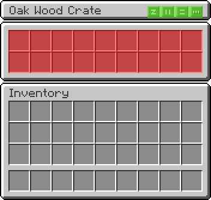
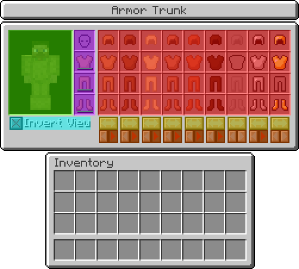

This mod primarily consists of three types of storage blocks: barrels, crates, and trunks. In addition, a few basic materials have been included as parts necessary to craft the various storage blocks.
The first step to crafting the storage blocks is the iron nugget.
Using iron nuggets both barrel hoops and redstone nails, the components required for barrels and crates, can be crafted.
Barrels are grouped into four categories: wood, stone, metal, and crystal. The groups differ in the maximum amount of liquid they can hold: 8,000 mb, 16,000 mb, 32,000 mb, and 64,000 mb respectively. Barrels can be quickly filled with liquid by right-clicking the barrel with a liquid container such as a bucket. This only works if the barrel is empty or has the same liquid as the container. If the quick-fill fails, then the barrel interface screen will be opened as normal. In addition, the barrel will work with automated liquid transport systems and liquid can be filled or drained from any side.
There are twenty-four barrels in total: oak, spruce, birch, jungle, acacia, dark oak, sandstone, red sandstone*, stone, granite*, diorite*, andesite*, prismarine*, dark prismarine*, iron, gold, copper^, tin^, bronze^, silver^, lapis, diamond, emerald, and ruby^. Only thirteen barrels are available by default, six barrels have been added in preparation for Minecraft 1.8, and five barrels will be craftable if other mods register the related materials in the forge ore dictionary.
* - Minecraft 1.8 barrels.
^ - Forge ore dictionary barrels.
The barrel interface is simple, consisting of a fluid tank (BLUE), a fluid container input slot (RED), and a fluid container output slot (ORANGE).
Three pieces of information are displayed on the barrel interface: the maximum capacity (GREEN), the current amount of fluid in the tank (YELLOW), and the percentage of tank space used (CYAN).
Crates are grouped into four categories: wood, stone, metal, and crystal. The groups differ in the number of slots they contain: 18, 27, 36, and 45, respectively. Crates should function as a component in common automated transport systems.
There are twenty-four crates in total: oak, spruce, birch, jungle, acacia, dark oak, sandstone, red sandstone*, stone, granite*, diorite*, andesite*, prismarine*, dark prismarine*, iron, gold, copper^, tin^, bronze^, silver^, lapis, diamond, emerald, and ruby^. Only thirteen crates are available by default, six crates have been added in preparation for Minecraft 1.8, and five crates will be craftable if other mods register the related materials in the forge ore dictionary.
* - Minecraft 1.8 barrels.
^ - Forge ore dictionary barrels.

The crate interface is extremely simple and operates the same as a normal chest with normal storage slots (RED). If the Inventory Tweaks mod is installed, then sorting buttons will be displayed (GREEN).
Trunks are storage blocks specialized toward the types of materials they hold. In general, trucks are limited to containing a single type or category of materials with the advantage of organization, larger storage capacity, and/or other unique features.
The armor trunk can store up to nine sets of armor and allows the player to change their entire armor at once.
The armor trunk interface shows a preview of the armor the player is wearing (GREEN) next to the player's armor inventory slots (PURPLE), similar to the standard inventory screen. The preview can be inverted, to view the player from behind, by clicking the invert view checkbox (CYAN). The armor storage area (RED) is composed of thirty-six slots, nine each for helmets, chestplates, leggings, and boots.
Two features are provided for moving armor between the armor inventory and armor storage: swap buttons (YELLOW) and equip/unequip buttons (ORANGE). The swap feature will move all worn armor to the given storage column and move any armor from that column to the armor inventory. The equip button will move stored armor into any available empty armor inventory slots and, conversely, the unequip button will move worn armor into any available empty slots in the given column.
